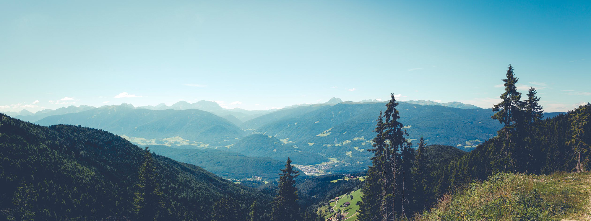

Scouts
Scouts typically meet once a week during school terms, and sometimes during school holidays. At meetings they develop their leadership and life skills.
About Scouts
Scouts typically meet once a week during school terms, and sometimes during school holidays. At meetings they develop their leadership and life skills. They learn Scouting skills like hiking, hill-walking, camping, knots, first aid, cooking and more. The real adventure is in the outdoors – mountain hiking, water-based activities, mini-expeditions, camps from one to ten nights in length, community events that encourage active citizenship. They partake in hostel stays, and sometimes overseas trips. Scouts love being in the outdoors.
National events for Scouts include the Phoenix Patrol Challenge, The Sionnach Adventure, Mountain Pursuit Challenges, PEAK and the Crean Challenge. They also include Jamborees (national and international camps). There are also events run by the Scout County and Scout Province.
The Scout section meets on Wednesday nights from 2000 to 2130.
Hyde Rd. Dalkey | Email: info@dalkeyscouts.ie
